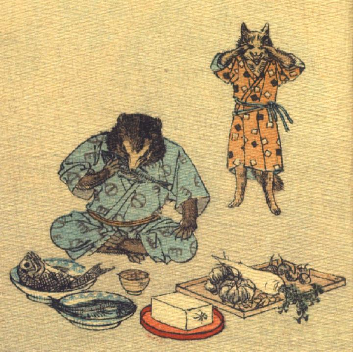

親狐を売ったお金で、ご馳走を買ってきた狸。ご馳走を独り占めして、食べている。子狐は親狐を売られたことを知って、泣きじゃくっている。
著作者：J.Dautremer／出典：親書誌：U426_nichibunken_0120：La victoire du petit renard／日付：2006／資源識別子：U426_nichibunken_0120_0010_0000
Copyright (c)2010- International Research Center for Japanese Studies, Kyoto, Japan. All rights reserved.